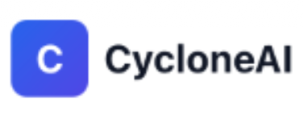
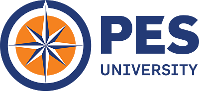
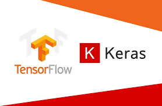
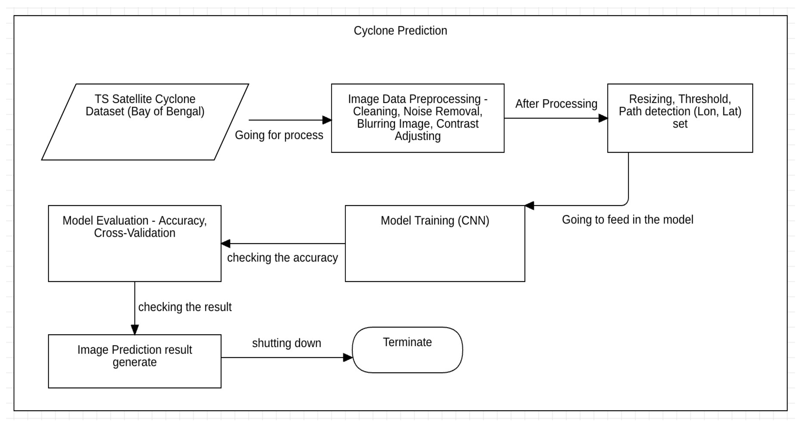
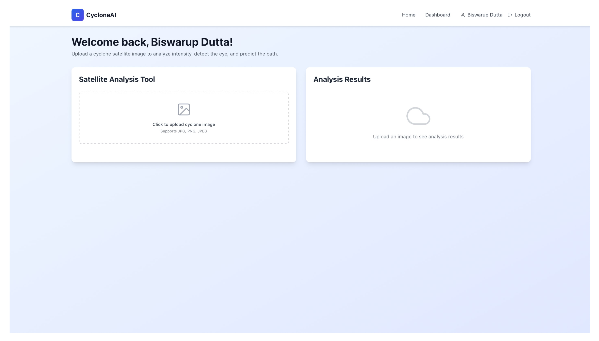
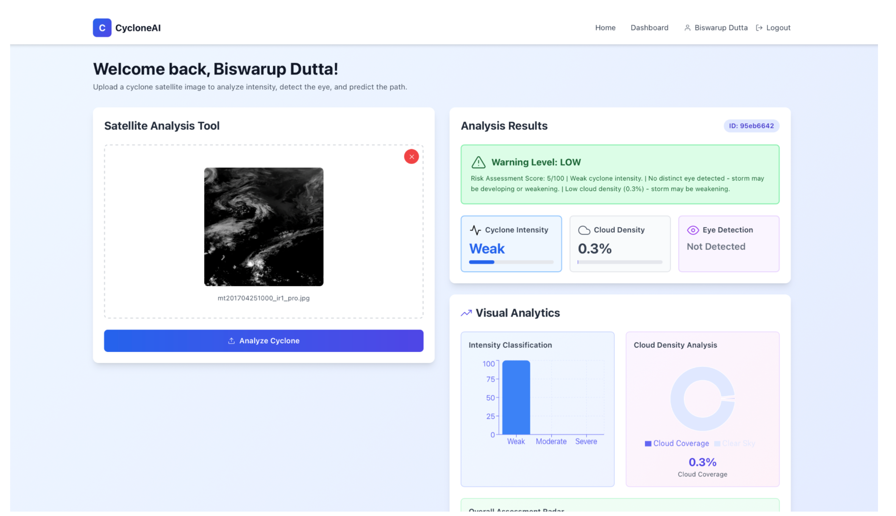

SRN: PES1PG24CA033
Assistant Professor

Abstract
CycloneAI is an AI-powered cyclone analysis and warning system that processes satellite imagery to produce actionable insights for early warning. The platform predicts cyclone intensity (Weak/Moderate/Severe), detects eye formation, estimates cloud density, and generates a warning level with a short explanation. It provides a secure full‑stack web application (React dashboard + FastAPI backend) that supports user authentication and stores analysis history for review and comparison.
Objective
- Build a web-based cyclone analysis tool that accepts satellite cyclone images.
- Classify cyclone intensity into categories (Weak/Moderate/Severe) using a trained CNN model.
- Detect cyclone eye presence and compute cloud density as supporting indicators.
- Generate a warning level and interpretable summary for users.
- Provide authentication and maintain per-user analysis history via backend APIs and database.
Proposed Solution
Inclusion Net provides automated credit scoring, FOIR-based loan eligibility calculation, intelligent matching algorithms, and real-time WhatsApp-like chat. An admin dashboard manages KYC approvals, loan reviews, and analytics. The platform enforces strict role-based access control utilizing robust JWT authentication mechanisms to ensure comprehensive data security.
Tools


Process Flow Diagram

Result


Conclusion
CycloneAI combines deep learning and lightweight image analytics in a full-stack web system to support cyclone monitoring and early warnings. It converts raw satellite images into key insights such as intensity, eye detection, cloud density, and risk levels, displayed through a secure dashboard with stored history, while offering a scalable base for future enhancements.